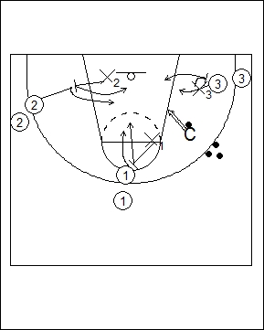

Catégorie : REBOND (Reb-05)
Déroulement
- Trois files de joueurs, comme indiqué sur le schéma. Le Coach possède plusieurs ballons en réserve et peut shooter d’emplacements différents.
- Les premiers joueurs des trois files jouent en défense (X1, X2 et X3). Les deuxièmes joueurs sont attaquants. Dès que le Coach shoote, les six joueurs effectuent le rebond.
- Si le rebond est gagné par les attaquants, on recommence avec les mêmes joueurs dans les mêmes fonctions. Si les défenseurs gagnent le rebond, ils vont derrière les files (X1 derrière la file des 1, X2 derrière la file des 2 et X3 derrière la file des 3); ceux qui étaient les premiers attaquants deviennent défenseurs sur les joueurs suivants.
Coaching points
- X1, X2 et X3 (et les défenseurs suivants) doivent jouer en défense correctement en fonction de l’emplacement choisi par le Coach pour le shoot.
- Il est intéressant de placer les joueurs dans des emplacements qu’ils occupent souvent en match.